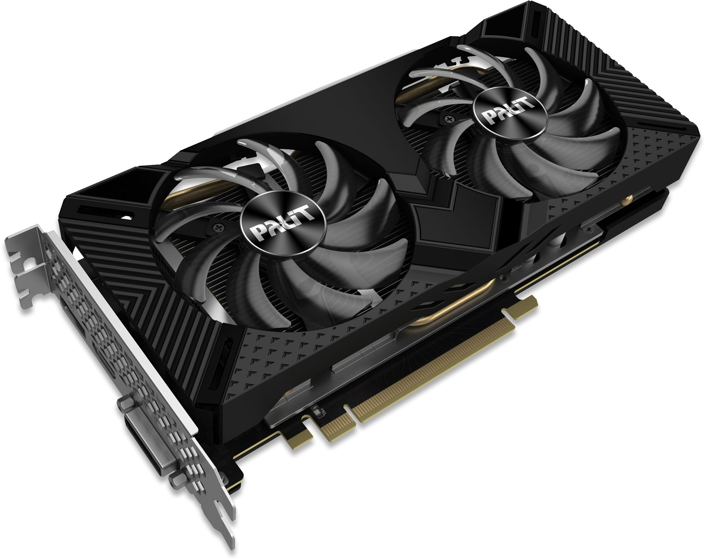
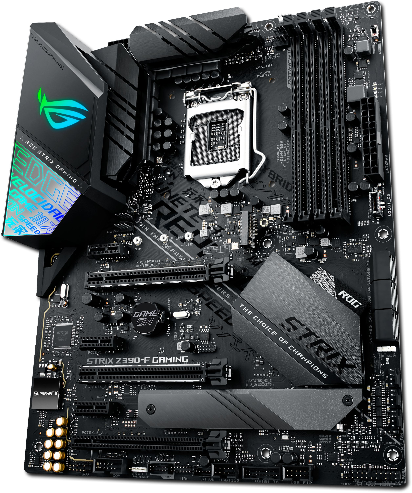

1 / 3

2 / 3

3 / 3

This website will be a one stop shop for everything you need to know about building computers. It will take you through the whole cycle from why you should build your own PC in the first place right down to the weekly or even monthly maintenance you can do to keep your computer running perfectly for a long time. Dotted in between is some useful information about parts, the market you're buying into when buying computer parts and the actual process of building the computer itself.
By learning everything on this site you should not only know exactly how to build your pc and upgraded but also how to keep it running for as Long as possible so it can serve all your computing needs